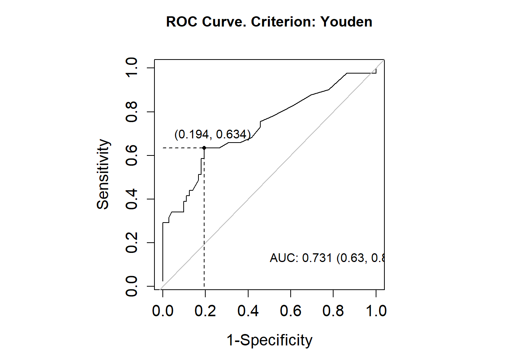
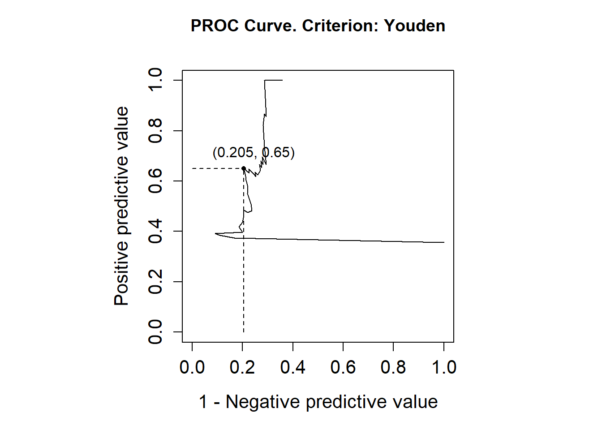
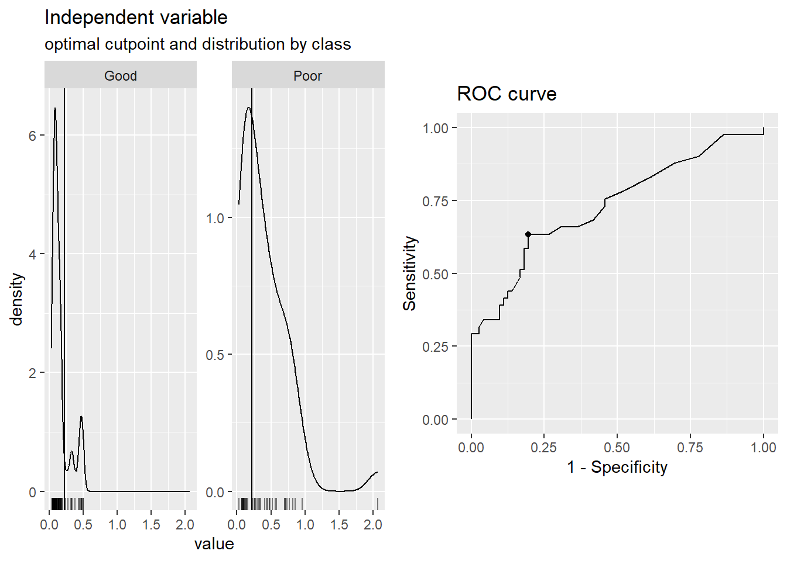
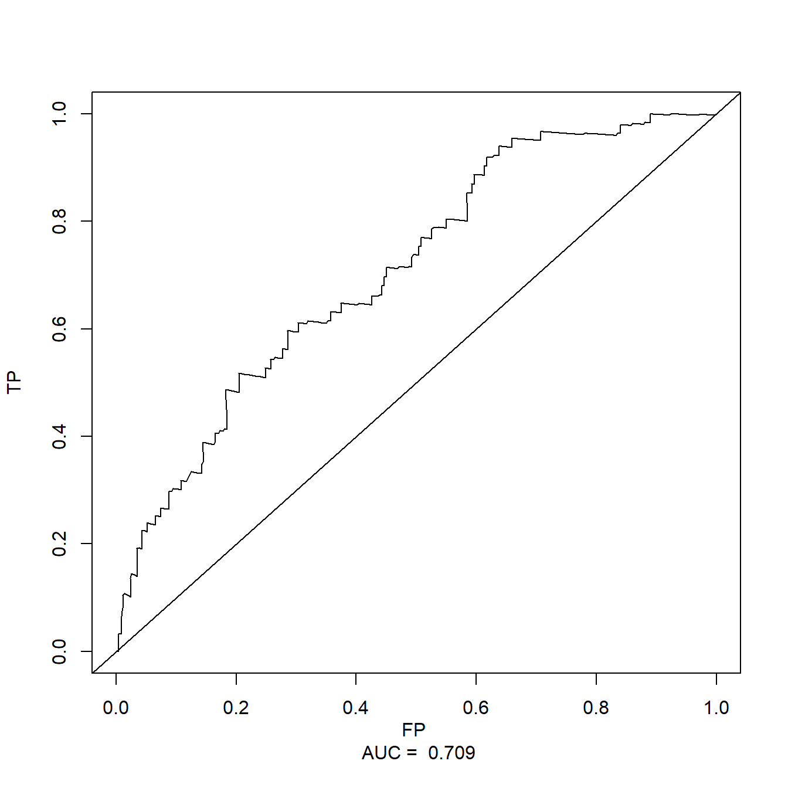

library(pROC)
## Type 'citation("pROC")' for a citation.
##
## Attaching package: 'pROC'
## The following objects are masked from 'package:stats':
##
## cov, smooth, var
data(aSAH)
dim(aSAH)
## [1] 113 7
str(aSAH)
## 'data.frame': 113 obs. of 7 variables:
## $ gos6 : Ord.factor w/ 5 levels "1"<"2"<"3"<"4"<..: 5 5 5 5 1 1 4 1 5 4 ...
## $ outcome: Factor w/ 2 levels "Good","Poor": 1 1 1 1 2 2 1 2 1 1 ...
## $ gender : Factor w/ 2 levels "Male","Female": 2 2 2 2 2 1 1 1 2 2 ...
## $ age : int 42 37 42 27 42 48 57 41 49 75 ...
## $ wfns : Ord.factor w/ 5 levels "1"<"2"<"3"<"4"<..: 1 1 1 1 3 2 5 4 1 2 ...
## $ s100b : num 0.13 0.14 0.1 0.04 0.13 0.1 0.47 0.16 0.18 0.1 ...
## $ ndka : num 3.01 8.54 8.09 10.42 17.4 ...26 ROC曲线的最佳截点
前面我们介绍了超多可用于确定连续性变量最佳截点的R包，比如surv_cutpoint()、x-tile、cutoff等，这些方法主要是为了在做生存分析时获得最小的P值：
ROC曲线一般用在诊断实验中，ROC的最佳截点，通常是要ROC曲线下面积最大(或者最大敏感性、最大特异性等)，也就是基于约登指数。今天介绍一些常见的可以用于确定ROC曲线最佳截点的R包，同时包含了二分类数据和生存数据，有一些包我们在之前的推文中也介绍过。
26.1 pROC
只能用于二分类数据，不能用于生存数据。
使用pROC包需要注意，一定要指定direction，否则可能会得出错误的结果。
这个R包计算AUC是基于中位数的，哪一组的中位数大就计算哪一组的AUC，在计算时千万要注意！
关于这个包的详细介绍，请参考文章：用pROC实现ROC曲线分析
使用pROC包的aSAH数据，其中outcome列是结果变量，1代表Good，2代表Poor。
计算AUC及可信区间：
res <- pROC::roc(aSAH$outcome,aSAH$s100b,ci=T,auc=T)
## Setting levels: control = Good, case = Poor
## Setting direction: controls < cases
res
##
## Call:
## roc.default(response = aSAH$outcome, predictor = aSAH$s100b, auc = T, ci = T)
##
## Data: aSAH$s100b in 72 controls (aSAH$outcome Good) < 41 cases (aSAH$outcome Poor).
## Area under the curve: 0.7314
## 95% CI: 0.6301-0.8326 (DeLong)显示最佳截点，比如AUC最大的点：
plot(res,
legacy.axes = TRUE,
thresholds="best", # AUC最大的点
print.thres="best") 
最佳截点是0.205，特异度是0.806，敏感度是0.634。
26.2 cutoff
cutoff包中的roc函数也可以用于确定二分类数据ROC曲线的最佳截点，这个R包还可以用于连续性变量最佳截点的计算，之前专门介绍过：最佳截断值确定之cutoff
library(cutoff)
##
## Attaching package: 'cutoff'
## The following object is masked from 'package:pROC':
##
## roc
cutoff::roc(aSAH$s100b, aSAH$outcome)
## type auc cutoff sensitivity specificity
## 1 positive classification 0.73 0.22 0.6341463 0.8055556该包给出的最佳截点是0.22，敏感度是0.6341463，特异度是0.8055556。和pROC的结果有一点点差别，问题不大。
26.3 optimalcutpoints
OptimalCutpoints包也是用于二分类数据ROC曲线的最佳截点，不能用于生存数据。
该包中最重要的函数是optimal.cutpoints()、control.cutpoints()、summary.optimal.cutpoints()和plot.optimal.cutpoints()函数。optimal.cutpoints()函数根据所选的准则计算最佳切点以及其准确性度量。可以选择多个准则来选择最佳切点。control.cutpoints()函数用于设置每种方法特定的几个参数，例如成本值或诊断准确性度量的最小值。summary.optimal.cutpoints()和plot.optimal.cutpoints()函数分别生成数值和图形输出。数值输出包括有关最佳切点的信息，包括选择最佳值的方法，以及最佳切点的数量（在某些情况下可能有多个值）和最佳切点及其准确性度量的估计值。
使用起来也是非常简单，没有难度：
library(OptimalCutpoints)
oc_youden <- optimal.cutpoints(X="s100b",
status = "outcome",
tag.healthy="Good",
method="Youden",#支持的标准超多
data=aSAH
)
summary(oc_youden)
##
## Call:
## optimal.cutpoints.default(X = "s100b", status = "outcome", tag.healthy = "Good",
## methods = "Youden", data = aSAH)
##
## Area under the ROC curve (AUC): 0.731 (0.63, 0.833)
##
## CRITERION: Youden
## Number of optimal cutoffs: 1
##
## Estimate
## cutoff 0.2200000
## Se 0.6341463
## Sp 0.8055556
## PPV 0.6500000
## NPV 0.7945205
## DLR.Positive 3.2613240
## DLR.Negative 0.4541632
## FP 14.0000000
## FN 15.0000000
## Optimal criterion 0.4397019给出的结果也是和pROC以及cutoff包是一致的。
画出来的图也是和pROC一样的：
plot(oc_youden)
## Press return for next page....
除此之外，这个包还可以指定协变量，还可以使用最大化敏感度/特异度等指标确定最佳截点，大家可以去查看帮助文档。
26.4 cutpointr
cutpointr是一个用于整洁计算“最佳”切点的R包。它支持多种计算切点的方法，并包括几个可以通过选择切点来最大化或最小化的度量标准。cutpointr可以自动通过自助法计算最佳切点的变异性，并返回各种性能指标的袋外估计值。
支持支二分类数据不支持生存数据。
install.packages("cutpointr")这个包也支持多种标准，使用时也要注意方向。
library(cutpointr)
##
## Attaching package: 'cutpointr'
## The following object is masked from 'package:cutoff':
##
## roc
## The following objects are masked from 'package:pROC':
##
## auc, roc
cp <- cutpointr(data=aSAH,
x=s100b,
class=outcome,
method = maximize_metric, # 最大化指标
metric = youden) # 选择指标
## Assuming the positive class is Poor
## Assuming the positive class has higher x values
summary(cp)
## Method: maximize_metric
## Predictor: s100b
## Outcome: outcome
## Direction: >=
##
## AUC n n_pos n_neg
## 0.7314 113 41 72
##
## optimal_cutpoint youden acc sensitivity specificity tp fn fp tn
## 0.22 0.4397 0.7434 0.6341 0.8056 26 15 14 58
##
## Predictor summary:
## Data Min. 5% 1st Qu. Median Mean 3rd Qu. 95% Max. SD NAs
## Overall 0.03 0.046 0.09 0.14 0.2469912 0.33 0.722 2.07 0.2721603 0
## Good 0.04 0.040 0.08 0.11 0.1615278 0.17 0.470 0.50 0.1308548 0
## Poor 0.03 0.070 0.12 0.30 0.3970732 0.56 0.860 2.07 0.3751949 0画图：
plot(cp)
除此之外，还有很多其他函数没介绍，大家可以参考github：https://github.com/Thie1e/cutpointr
26.5 survavalROC
能做time-dependent-ROC分析的R包不多，找了好久也没发现一个R包可以完成time-dependent-ROC的所有分析，timeROC是比较全能的了，但是不能计算最佳截点，survavalROC可以计算最佳截点，但是又不能同时计算多个时间点的ROC曲线。
所以最佳截点我们可以通过survivalROC包实现。
load(file = "./datasets/timeROC.RData")
library(survivalROC)
# 1年的最佳截点
roc1 <- survivalROC(Stime = df$futime,
status = df$event,
marker = df$riskScore,
method = "KM",
predict.time = 1 # 时间选1年
)
roc1$cut.values[which.max(roc1$TP - roc1$FP)] # 最佳截点的值，基于约登指数计算出来
## [1] -0.07986499最佳截点是-0.07986499，就是这么简单，下面就是画图：
plot(roc1$FP, roc1$TP, type="l", xlim=c(0,1), ylim=c(0,1),
xlab=paste( "FP", "\n", "AUC = ",round(roc1$AUC,3)),
ylab="TP")
abline(0,1)
除了以上介绍的R包，还有ThresholdROC也是同样的用法，这里就不介绍了，大家感兴趣的自己学习一下。
公众号后台回复ROC即可获取ROC曲线合集，回复最佳截点即可获取最佳截断值相关推文合集。